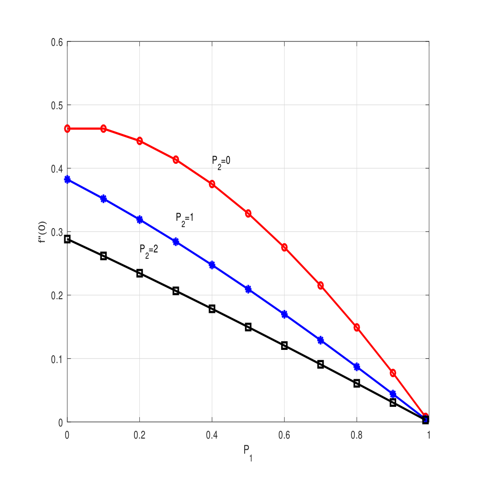
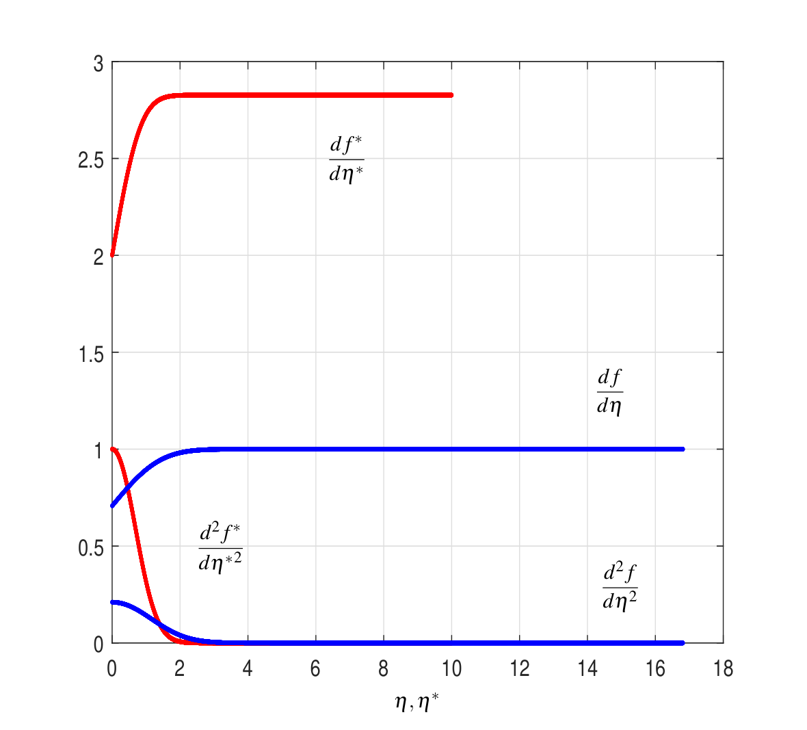

01中文摘要
将 Töpfer 一个多世纪前为 Blasius 问题提出的非迭代变换法推广到具有扩展边界条件的 Blasius 问题：利用两个物理参数对扩展缩放群的不变性，把边值问题化为初值问题，求解后再缩放。由于该方法不能预先固定物理参数，文中进一步给出迭代型变换法，以便对给定参数直接求数值解。问题对应稀薄气体自由流绕运动平板的流动，参数包括壁面速度比与滑移参数。
原始摘要（英文/原文）
The first contribution of this paper is the extension of the non-iterative transformation method, proposed by T\”opfer more than a century ago and defined for the numerical solution of the Blasius problem, to a Blasius problem with extended boundary conditions. This method, which makes use of the invariance of two physical parameters with respect to an extended scaling group of point transformations, allows us to solve numerically the Blasius problem with extended boundary conditions by solving a related initial value problem and then rescaling the obtained numerical solution. Therefore, our method is an initial value method. However, in this way, we cannot fix in advance the values of the physical parameters, and if we need just to compute the numerical solution for given values of the two parameters we have to define an iterative extension of the transformation method, which is the second contribution of this work.
02阅读说明
方法类预印本（15 页；2024 年 1 月 31 日 Posted，稿件标注 July 23, 2021），主题为用非迭代/迭代变换法数值求解含移动壁与稀薄气体滑移的扩展 Blasius 问题。全文完整（含 38 条参考文献），无实验、无 CFD；公式 (1)–(10) 已对照 PDF 第 5–7 页核对（文本层公式乱码较严重，符号以 PDF 为准），表1、表2 与图1、图2 可读。页码均为 PDF 页（bundle 的 PAGE 标记）。文中未给出截断边界误差估计、软件实现细节或与原始文献数值的逐点对比。 文章类型：预印本
03一句话核心与三句话摘要
将 Töpfer 非迭代变换法推广到含 P1、P2 两参数的扩展 Blasius 问题，并给出可预设参数的迭代版本。
- 经典 Blasius 问题只有一个相似参数，而含移动壁与稀薄气体滑移的扩展问题带有两个物理参数 P1=Uw/U∞ 与 P2=Uslip/U∞，已有的非迭代变换法尚未覆盖这一情形（p4–5）。 AI概括
- 作者构造扩展缩放群（f*=λf、η*=λ^−1η、P1*=λ^δ1P1、P2*=λ^δ2P2），由不变性得 δ1=2、δ2=−1，从而把边值问题化为初值问题：先解星号问题并由渐近斜率求 λ，再反缩得到缺失初值与 P1、P2；需要固定参数时引入 h 的缩放，以 Γ(h*)=λ^−σh−1=0 为变换函数用二分法等求根（p6–7）。 原文明确
- 表1 给出 8 组 (P1*,P2*)→(P1,P2,f″(0)) 数据，P1=P2=0 时退化为 Blasius 问题并复现 f″(0)=0.469599988361；非迭代法不能预先指定参数、因而不能直接画固定 P1 的曲线，是作者承认的主要缺点（p7–10）。 原文明确
04核心内容清单
| 要点 | 类型 | 重要性 | 原文依据 | 属性 |
|---|---|---|---|---|
| 第一项贡献：把 Töpfer 的非迭代变换法从经典 Blasius 问题推广到带扩展边界条件（移动壁+稀薄滑移）的 Blasius 问题。 | 方法贡献 | A | Abstract，第1–3页；§4，第10页 | 原文明确 |
| 第二项贡献：给出迭代扩展，使 P1、P2 可预先固定，从而能计算指定参数下的数值解。 | 方法贡献 | A | Abstract，第3页；§2.2，第7页 | 原文明确 |
| 扩展缩放群的不变性要求 δ1=2、δ2=−1，这是全部变换关系的基础。 | 理论结果 | A | 式(2)–(3)，第6页 | 原文明确 |
| 非迭代法流程：以 f*″(0)=1 积分星号 IVP，由 λ=[f*′(η*∞)]^{1/2} 定 λ，再由式(6)(7) 恢复 f″(0)、P1、P2 并反缩。 | 算法 | A | 式(4)–(7)，第6页 | 原文明确 |
| 迭代法把 h=1 转化为隐式变换函数 Γ(h*)=λ^−σh−1 的根，可用二分、割线、试位、Newton 或拟 Newton 法求解；取 σ=10、Tol=10^−5。 | 算法 | A | 式(8)–(10)，第7页 | 原文明确 |
| 表1 给出 8 组非迭代结果：随 P1*、P2* 增大，P1 由 0.140 增至 0.481，f″(0) 由 0.420 降至 0.0298。 | 定量数据 | A | 表1，第8页 | 原文明确 |
| 非迭代法的固有缺点：P1、P2 不能预先固定，因而不能按“固定 P1、画 f″(0)–P2”方式组织数据。 | 方法局限 | A | §3，第7–8页 | 原文明确 |
| 表2 展示二分法 16 次迭代：h* 收敛到 1.44891357421875，λ 收敛到 1.448927239，Γ 降至 −9.4310×10^−6。 | 定量数据 | A | 表2，第9页 | 原文明确 |
| Blasius 极限（P1=P2=0）复现 f″(0)=0.469599988361，与 Fazio (1992) 自由边界解一致。 | 验证 | A | §3，第9页 | 原文明确 |
| 反缩后星号问题的截断边界 η*∞ 小于原问题所需 η∞，可减少计算量。 | 方法优点 | B | §3，第8页；图2，第11页 | 原文明确 |
| 图1 显示 f″(0) 随 P1 单调下降，且 P2=0、1、2 三条曲线依次降低。 | 定量趋势 | B | 图1，第10页 | AI概括 |
05引言：研究问题与领域缺口
【原文明确】Prandtl (1904) 确立边界层理论后，Blasius (1908) 给出平板绕流相似解；该问题是半无限区间 [0,∞) 上的边值问题，Weyl 证明其唯一解具有正且单调递减、趋于零的二阶导数（p2）。Blasius 方程与 η=0 处两个边界条件对缩放点变换群不变，而 η→∞ 的渐近条件不变，这一性质带来三重后果：Töpfer 据此给出把 BVP 化为 IVP 的非迭代变换法；Serrin 据此给出存在唯一性定理；Rubel 的截断边界误差分析也依赖该不变性（p2–4）。【原文明确】非迭代法已被用于滑移边界条件（微尺度气体/液体流动）、移动壁（Ishak 等）、表面气化（Emmons；Lu & Law）以及 Sakiadis 问题，并被推广到含一个或多个物理参数的边界层问题（Na）；迭代变换法（ITM）由 Fazio 提出并用于自由边界、移动边界、Homann/Hiemenz、Sakiadis 等问题（p3–5）。【AI概括】缺口在于：上述非迭代法针对的是单参数或特定边界条件，尚未给出同时含移动壁与稀薄滑移两个物理参数 P1、P2 的扩展 Blasius 问题的统一变换框架，也没有说明在需要预设这两个参数时如何迭代求解。【原文明确】目标（两项贡献）：(1) 把 Töpfer 非迭代变换法推广到带扩展边界条件的 Blasius 问题；(2) 给出迭代扩展，使得可以针对给定 P1、P2 计算数值解（p1–3）。
06流动条件与几何构型
| 项目 | 数值/描述 | 依据 | 备注 |
|---|---|---|---|
| 物理问题 | 二维稳态不可压缩边界层，稀薄气体自由流绕移动平板流动；含壁面滑移与壁面移动 | §1–§2，第2–5页 | 相似变量 η，速度比 P1=Uw/U∞ |
| 控制方程 | d³f/dη³+f d²f/dη²=0（式1） | 式(1)，第5页 | |
| 壁面边界条件 | f(0)=0，df/dη(0)=P1+P2 d²f/dη²(0) | 式(1)，第5页 | 滑移速度以壁面速度梯度乘以 P2 表示 |
| 远场边界条件 | df/dη(η)→1，η→∞ | 式(1)，第5页 | |
| 算例 1（表1） | P1*=P2*=0.25 → P1=0.140225769，P2=0.333807506，f″(0)=0.42007973468 | 表1，第8页 | |
| 算例 2（表1） | P1*=P2*=0.5 → P1=0.241979004，P2=0.336675506，f″(0)=0.33667550559 | 表1，第8页 | |
| 算例 3（表1） | P1*=P2*=0.75 → P1=0.309184205，P2=1.168108665，f″(0)=0.26468787856 | 表1，第8页 | |
| 算例 4（表1） | P1*=P2*=1 → P1=0.353764405，P2=1.681291175，f″(0)=0.21041233684 | 表1，第8页 | |
| 算例 5（表1） | P1*=P2*=1.5 → P1=0.405947260，P2=2.883381325，f″(0)=0.14078861396 | 表1，第8页 | |
| 算例 6（表1） | P1*=P2*=2 → P1=0.433836425，P2=4.294197226，f″(0)=0.10102852811 | 表1，第8页 | |
| 算例 7（表1） | P1*=P2*=2.5 → P1=0.450478633，P2=5.889425257，f″(0)=0.07648940496 | 表1，第8页 | |
| 算例 8（表1） | P1*=P2*=5 → P1=0.481068451，P2=16.119500068，f″(0)=0.02984388156 | 表1，第8页 | |
| 迭代算例（表2） | P1=0.5、P2=0，二分法，σ=10，Tol=10^−5，初始区间 h*∈[0.75,1.75] | 表2，第9页；§2.2，第7页 | |
| 反缩示例（图2） | P1*=P2*=1，Δη=0.001，η*∞=10 | §3，第8页；图2，第11页 | |
| Blasius 校验 | P1=P2=0，Δη=0.0001，η*∞=10，f″(0)=0.469599988361 | §3，第9页 | |
| 图1 参数扫描 | P2=0、1、2 三条曲线，P1 约 0–1，f″(0) 约 0–0.6 | 图1，第10页 | P1、P2 的其余扫描范围文中未逐一列出 |
| 数值积分器 | 八阶 Runge–Kutta，常步长 | §3，第7页 | |
| 截断边界与步长的选择依据 | 文中未提及（仅给出所用数值，未讨论敏感性） | §3，第7–9页 |
07核心现象与关键参数
| 参数 | 定义 | 数值 | 关系/说明 | 依据 |
|---|---|---|---|---|
| P1 | 壁面移动速度与自由流速度之比，P1=Uw/U∞ | Uw>0 时为正（与自由流同向），Uw<0 时为负（反向） | 出现在壁面动量边界条件中 | §2，第5页 |
| P2 | 无量纲滑移速度，P2=Uslip/U∞=(2/P3−1)Kn_x Re_x^{1/2}，Re_x=U∞x/(2ν) | 由 Kn_x 与 Re_x 决定；P3 的含义文中未单独说明 | 与 P1 一起构成壁面剪切边界条件的两个物理参数 | §2，第5页 |
| δ1 | P1 在扩展缩放群下的标度指数 | 2 | 由不变性条件确定 | 式(3)，第6页 |
| δ2 | P2 在扩展缩放群下的标度指数 | −1 | 由不变性条件确定 | 式(3)，第6页 |
| λ | 缩放因子，由星号问题渐近斜率确定 | λ=[df*/dη*(η*∞)]^{1/2} | 同时用于反缩解、恢复 f″(0)、P1、P2 | 式(5)，第6页 |
| 缺失初值 f″(0) | 原问题的壁面曲率（与摩阻相关） | f″(0)=λ^{2δ−1}f*″(0)，星号问题取 f*″(0)=1 | 非迭代法输出的主要未知量，见表1 与图1 | 式(4)、(6)，第6页 |
| 参数恢复关系 | 由星号参数恢复物理参数 | P1=λ^{1−2δ1}P1*，P2=λ^{2δ2}P2* | δ1=2、δ2=−1 时化为 P1=λ^−3P1*、P2=λ^−2P2* | 式(7)，第6页 |
| σ | 迭代法中 h 的缩放指数，h*=λ^σh | 10（作者称任意正数均可） | 决定变换函数 Γ 的形式与求根灵敏度 | 式(8)、(10)，第7页 |
| Tol | 求根终止判据 |Γ(h*)|<Tol | 10^−5 | 表2 最后一次迭代 |Γ|=9.4310×10^−6 | §2.2，第7页；表2，第9页 |
| 表2 收敛值 | 二分法最终 h* 与 λ | h*=1.44891357421875，λ=1.448927239 | 对应 P1=0.5、P2=0 的解 | 表2，第9页 |
| Blasius 摩阻值 | P1=P2=0 时的 f″(0) | 0.469599988361 | 与 Fazio (1992) 自由边界解一致，用于校验 | §3，第9页 |
08方法与数据
【原文明确】非迭代法（§2.1）：先验证扩展 Blasius 问题在扩展缩放群 f*=λf、η*=λ^−1η、P1*=λ^δ1P1、P2*=λ^δ2P2（式2）下的不变性，得 δ1=2、δ2=−1（式3）；然后在截断边界 η*∞ 上积分星号变量的方程，初值取 f*(0)=0、f*′(0)=P1*+P2*f*″(0)、f*″(0)=1（式4），由渐近斜率给出 λ=[f*′(η*∞)]^{1/2}（式5），再按 f″(0)=λ^{2δ−1}f*″(0)（式6）和 P1=λ^{1−2δ1}P1*、P2=λ^{2δ2}P2*（式7）恢复原问题量，最后对星号解做反缩得到 BVP 解（p6）。【原文明确】迭代法（§2.2）：固定 P1、P2 时，在缩放群中引入虚构参数 h 的缩放 h*=λ^σh（式8），并令星号初值为 f*(0)=0、f*′(0)=h*^{2/σ}P1+h*^{−1/σ}P2 f*″(0)、f*″(0)=1（式9）；任意给定 h* 积分后一般得不到 h=1，于是把 h 视为隐式变换函数 Γ(h*)=λ^−σh−1（式10）的根，用二分、割线、试位、Newton 或拟 Newton 法求根；作者取 σ=10，终止判据 |Γ(h*)|<Tol，Tol=10^−5（p7）。【原文明确】数值积分采用八阶 Runge–Kutta 法、常步长（p7）。算例设置：表1 的非迭代结果取 P1*=P2*=0.25、0.5、0.75、1、1.5、2、2.5、5；图2 的反缩示例取 P1*=P2*=1、Δη=0.001、η*∞=10；Blasius 校验取 Δη=0.0001、η*∞=10（p7–8）。【AI概括】本文没有网格/步长无关性研究、没有误差估计，也没有与 Fang & Lee (2005) 等原始数值结果的逐点对比；验证仅依赖 Blasius 极限与文献值的一致。
| 项目 | 内容 | 依据 | 备注 |
|---|---|---|---|
| 非迭代变换法（non-ITM） | 利用扩展缩放群不变性，把 BVP 化为星号变量的 IVP；积分后由 λ 反缩得到解 | §2.1，第6页 | 参数 P1、P2 不能预先指定 |
| 不变性分析 | 考察式(1) 的微分方程与 η=0 两个边界条件在式(2) 群下的不变性，要求 δ1=2、δ2=−1 | 式(2)–(3)，第6页 | |
| 星号初值问题 | f*(0)=0，f*′(0)=P1*+P2*f*″(0)，f*″(0)=1，积分区间 [0,η*∞] | 式(4)，第6页 | |
| λ 的计算 | λ=[f*′(η*∞)]^{1/2}，用截断边界处的斜率近似无穷远斜率 | 式(5)，第6页 | |
| 解的反缩 | f(η)=λ^−1f*(λ^−1η)（由 f*=λf、η*=λ^−1η 反解）；图2 给出反缩前后分量对比 | §2.1，第6页；图2，第11页 | 文中表述为“rescaling the numerical solution of the IVP” |
| 迭代变换法（ITM） | 在群中加入 h*=λ^σh，初值改为 h*^{2/σ}P1+h*^{−1/σ}P2 f*″(0)，对 Γ(h*)=λ^−σh−1 求根 | 式(8)–(10)，第7页 | |
| 求根方法 | 可用二分、割线、试位、Newton 或拟 Newton 法；本文表2 使用二分法 | §2.2，第7页；表2，第9页 | |
| 数值积分 | 八阶 Runge–Kutta，常步长 | §3，第7页 | |
| 步长与截断边界 | 图2：Δη=0.001、η*∞=10；Blasius 校验：Δη=0.0001、η*∞=10 | §3，第8–9页 | 未给出选取依据与敏感性分析 |
| 验证方式 | 以 P1=P2=0 退化为 Blasius 问题，比较 f″(0)=0.469599988361 与文献值 | §3，第9页 | 未与扩展问题原始文献的数值逐点对比 |
| 软件与实现 | 文中未提及 | 全文 | 无代码、无计算平台说明 |
09核心推导与公式
先写出含两个物理参数的扩展 Blasius 方程与边界条件；再构造含 P1、P2 标度指数的扩展缩放点变换群，要求微分方程与 η=0 处边界条件不变，从而确定指数；据此选择一组“标准”星号初值（f*″(0)=1）积分初值问题，利用无穷远斜率定出缩放因子 λ，再反缩得到原问题的缺失初值 f″(0)、参数 P1、P2 与整条解曲线。固定参数时，把 h 的缩放引入群，使初值条件在群下不变，把“h=1”写成隐式变换函数的根，用一维求根迭代求解。
关键假设
- 流动为二维稳态不可压缩边界层，存在相似解，速度剖面只依赖相似变量 η（§2，第5页）
- 壁面滑移用壁面速度梯度与参数 P2 的线性关系表示，移动壁用 P1 表示（式1，第5页）
- 微分方程与 η=0 处两个边界条件在扩展缩放群下不变，而 η→∞ 的渐近条件不不变（§2.1，第5–6页）
- 可在有限截断边界 η*∞ 上积分，并用该处斜率近似无穷远斜率（式4–5，第6页）
- 星号问题可任取 f*″(0)=1 而不失一般性（式4，第6页）
- 迭代法中 h 为虚构参数，其作用仅是使初值条件在群下不变（§2.2，第7页）
- σ 可取任意正数，本文取 10 仅为简化（§2.2，第7页）
推导过程
控制方程与经典 Blasius 方程相同，但壁面动量条件含移动壁项 P1 与滑移项 P2 乘壁面曲率；P1、P2 分别由壁速比与稀薄滑移参数定义。
在经典 Blasius 缩放（f、η）之外，允许两个物理参数各自按幂次缩放，指数 δ1、δ2 待定。
把式(2) 代入方程与壁面条件，要求形式不变，得到两个指数的唯一取值。
在星号变量下取标准初值（壁面曲率为 1），壁面速度条件按 P1*、P2* 给定，然后在截断边界上积分。
星号解在截断边界的斜率应等于原问题无穷远斜率（=1）经缩放后的值，由此解出 λ。
利用二阶导数在缩放下的变换关系，由星号问题的壁面曲率恢复原问题的缺失初值。
由 P1*、P2* 的缩放关系反解出原问题的两个参数，从而得到一条 BVP 解及其对应的参数对。
为使初值条件在群下不变，把虚构参数 h 也纳入缩放群，并按 h 的幂次改写壁面速度条件。
任意 h* 积分后一般得不到 h=1，故把 h=1 写成隐式方程，用一维求根迭代确定 h*，从而得到给定 P1、P2 的解。
适用边界：推导只适用于该相似方程族（稳态二维不可压缩、壁面条件为 P1+P2 f″(0) 形式）；不变性依赖于 η→∞ 条件不不变这一事实，若远场条件改变（如外部压力梯度、可压缩性）需重新构造群；λ 由截断边界斜率近似，截断误差未估计；式(6) 中 δ 的取值与指数符号需核对；非迭代法不能预设 P1、P2；迭代法需要多次积分且依赖求根初值区间；σ 的选择对 Γ 的性态有影响但未分析；未讨论 P1<0 或 P2<0 时 λ 的正性与收敛性。
10结果：主要发现与关键证据
【原文明确】表1（第8页）给出非迭代法的 8 组数据：(P1*,P2*)=(0.25,0.25) 得 P1=0.140225769、P2=0.333807506、f″(0)=0.42007973468；(0.5,0.5) 得 0.241979004、0.336675506、0.33667550559；(0.75,0.75) 得 0.309184205、1.168108665、0.26468787856；(1,1) 得 0.353764405、1.681291175、0.21041233684；(1.5,1.5) 得 0.405947260、2.883381325、0.14078861396；(2,2) 得 0.433836425、4.294197226、0.10102852811；(2.5,2.5) 得 0.450478633、5.889425257、0.07648940496；(5,5) 得 0.481068451、16.119500068、0.02984388156。【原文明确】作者指出，由于每次选取的 P1*、P2* 同时变化，结果无法按“固定一个参数、画另一个参数的曲线”的方式呈现，这是非迭代法的缺点（p7–8）。【原文明确】表2（第9页）给出 P1=0.5、P2=0 时二分法的迭代过程：初始 h*=0.75（λ 未列，Γ=−0.424804078）与 h*=1.75（Γ=0.118076477），随后 h*=1.25 得 λ=1.389163618、Γ=−0.100177989，逐步收敛到 h*=1.44891357421875、λ=1.448927239、Γ=−9.4310×10^−6（共 16 行）(p9)。【原文明确】图1（第10页）给出缺失初值 f″(0) 随 P1 的变化，P2=0、1、2 三条曲线均随 P1 增大而单调下降，且 P2 越大曲线整体越低（图1 的坐标范围 P1=0–1、f″(0)=0–0.6）。【原文明确】图2（第11页）给出 P1=P2=1 时星号问题与原问题反缩后的解分量 df*/dη*、d²f*/dη*² 与 df/dη、d²f/dη² 随 η、η* 的分布，并指出反缩后 η*∞<η∞，可减少计算量（p8、p11）。【原文明确】Blasius 极限校验：P1=P2=0 时非迭代法退化为 Töpfer 原法，算得摩阻系数（即 f″(0)）0.469599988361，与 Fazio (1992) 用自由边界形式得到的同值“very good agreement”（p9）。
| 发现 | 证据 | 证据类型 | 强度 | 位置 | 属性 |
|---|---|---|---|---|---|
| 扩展 Blasius 问题在扩展缩放群下不变的条件为 δ1=2、δ2=−1，这是非迭代法与迭代法共同的理论基础。 | 式(2)–(3) 的推导；表1、表2 的所有结果均基于此 | 理论 | 强 | 式(2)–(3)，第6页 | 原文明确 |
| 非迭代法可把 BVP 化为一次 IVP 积分加反缩，得到一条解曲线及其对应参数对；图2 展示反缩前后各分量一致。 | 式(4)–(7)；图2 的 df*/dη* 与 df/dη、d²f*/dη*² 与 d²f/dη² | 方法验证 | 强 | §2.1、§3，第6、8、11页；图2 | 原文明确 |
| 非迭代法不能预设 P1、P2，因而无法按固定一个参数的方式绘制缺失初值曲线，这是其固有缺点。 | 表1 中 P1*、P2* 同步变化；作者明确说明“this is a drawback of our non-ITM” | 局限 | 强 | §3，第7–8页；表1，第8页 | 原文明确 |
| 迭代法通过 Γ(h*)=λ^−σh−1 的求根可固定参数；P1=0.5、P2=0 的二分算例 16 次迭代收敛到 h*≈1.44891、λ≈1.44893，|Γ|<10^−5。 | 表2 的完整迭代序列 | 定量/算法 | 强 | 表2，第9页；§2.2，第7页 | 原文明确 |
| P1=P2=0 时方法退化为 Töpfer 原法，算得 f″(0)=0.469599988361，与文献值一致，构成唯一的定量校验。 | §3 末段与 Fazio (1992) 值的比较 | 验证 | 强 | §3，第9页 | 原文明确 |
| 随 P1*、P2* 增大，反缩得到的 P1 从 0.140 增至 0.481 并趋于饱和，f″(0) 从 0.420 单调降至 0.0298。 | 表1 八行数据 | 定量趋势 | 中 | 表1，第8页 | AI概括 |
| 图1 表明在固定 P2 时 f″(0) 随 P1 单调下降，且 P2 越大曲线越低（P2=0、1、2）。 | 图1 三条曲线 | 定量趋势 | 中 | 图1，第10页 | AI概括 |
| 反缩后所需的截断边界 η*∞ 小于原问题的 η∞，作者据此认为可减少计算量。 | 图2 中 η 与 η* 的范围对比及正文说明 | 方法优点 | 中 | §3，第8页；图2，第11页 | 原文明确 |
11机制解释与论证链
【原文明确】论证链（方法层面）：前提一，扩展 Blasius 方程与 η=0 处两个边界条件在缩放群式(2) 下不变，而 η→∞ 条件不不变；前提二，因此可以固定一组“标准”壁面初值（f*″(0)=1）而不失一般性；步骤一，代入群变换要求形式不变，解出 δ1=2、δ2=−1；步骤二，积分星号 IVP 得渐近斜率，按 λ=[f*′(η*∞)]^{1/2} 定出缩放因子；步骤三，用 λ 反缩，得到原问题的 f″(0)、P1、P2 与整条解（p6，图2）。【原文明确】当参数必须预先给定时，上述链条的“参数随 λ 漂移”成为障碍：星号问题只能给出一条 λ–参数曲线，不能落在指定 (P1,P2) 上。解决办法是把 h 也纳入缩放群（h*=λ^σh），使初值条件在群下不变，则“h=1”成为关于 h* 的隐式方程 Γ(h*)=λ^−σh−1=0；每给一个 h* 积分一次得到 λ，即可用二分等一维求根迭代收敛到 h=1（p7，表2）。【AI概括】该机制的本质是用群的自由度换取“初值可积分性”：非迭代法用物理参数的缩放自由度吸收未知壁面曲率，迭代法则再引入一个人工自由度 h，把“参数匹配”转化为一维根搜索。代价分别是“参数不可控”与“多次积分”。
12讨论：结论、贡献与局限
【原文明确】作者强调该方法的本质是初值方法：利用两个物理参数在扩展缩放群下的不变性，把 BVP 化为 IVP，再通过 λ 反缩得到原解；代价是参数不能预先给定，只能得到参数空间中的一条曲线（p10–11）。当需要针对给定 P1、P2 求解时，必须采用迭代扩展：引入 h 缩放使初值条件在群下不变，把“h=1”作为隐式方程 Γ(h*)=0 的根，从而用标准求根法求解（p7）。【AI概括】因此两类方法的分工是：非迭代法适合快速扫描 P1、P2 空间（一次积分给出一组参数与解），迭代法适合单点精确求解（每次求根需多次积分，但可固定参数）。【原文明确】作者承认的局限：非迭代法不能预设物理参数；若需给定参数的解，必须用迭代版本（p10–11）。【AI推断】其他局限：本文只讨论一个相似方程族，结论不能直接外推到非相似或可压缩边界层；截断边界 η*∞ 的选取与误差未量化；未与原始扩展问题的其他数值解逐点比较；σ=10 的选择虽称“任意正数均可”，但对收敛速度与求根稳定性的影响未讨论；对 P1<0（Uw<0）或 P2 取负值时 λ 的正性与求根区间未作说明。
作者结论
【原文明确】作者结论：(1) 非迭代变换法可推广到带扩展边界条件的 Blasius 问题（移动壁+稀薄滑移，两个物理参数 P1、P2），其基础是扩展缩放群不变性与 δ1=2、δ2=−1（p10）。(2) 该方法把 BVP 化为相关 IVP 再反缩，属于初值方法；它不能预先固定物理参数（p10–11）。(3) 若需针对给定 P1、P2 计算解，必须采用迭代扩展：引入 h 缩放并以 Γ(h*)=λ^−σh−1=0 为变换函数求根（p11）。(4) 数值上采用八阶 Runge–Kutta、常步长；表1 与表2 给出非迭代与迭代结果，Blasius 极限校验通过（p7–9）。
主要贡献
- 首次把 Töpfer 非迭代变换法推广到含移动壁与稀薄滑移的扩展 Blasius 问题，并给出 δ1=2、δ2=−1 的不变性条件（p6、p10）。
- 给出可固定 P1、P2 的迭代变换法，把参数匹配转化为一维隐式方程求根（p7、p11）。
- 提供表1 的 8 组参数–解数据与表2 的完整二分迭代过程，可供复现与基准比较（p8–9）。
- 以 Blasius 极限（f″(0)=0.469599988361）完成方法自校验（p9）。
- 指出非迭代法在参数扫描与单点求解两种需求下的适用边界（p10–11）。
局限与未解决问题
【原文明确】作者承认：非迭代法不能预先设定物理参数，若需给定参数的解必须使用迭代版本（p10–11）。【AI推断】其他局限：(1) 无截断边界误差估计，η*∞=10 与步长的选择未做敏感性研究，也未使用 Rubel 型误差界；(2) 验证仅限 Blasius 极限，未与 Fang & Lee (2005) 等扩展问题的原始数值结果逐点对比；(3) 只有单一方程族与单一几何（平板），未涉及可压缩、压力梯度、非相似或三维情形；(4) σ=10 的选取、求根初值区间与收敛性（尤其 P1<0、P2<0）未讨论；(5) 表2 前两行未列出 λ，原因未说明；(6) 预印本状态，是否经同行评审、是否有修订版不明；(7) 公式 (6) 的指数与表1 数据的自洽性按 AI 复核存疑（见开放问题），使用该式前需回原文核对。
13对高速流动与工程的意义
【AI推断】对高速流动/工程的意义主要是方法学与工具层面，而非流动物理：(1) 对含壁面滑移、移动壁、表面气化等相似边界层问题，本文给出了一次积分即可扫描两参数空间的快速求解路径，可用于构建参数–摩阻图谱、为 CFD/DSMC 提供壁面摩擦与热流的基准解，或在校核中替代昂贵的迭代 BVP 求解。(2) 迭代版本可作为“给定工况精确求解器”，适合需要固定 P1、P2 的工程查表与不确定度分析。(3) 对 SBLI/SWBLI 研究，本文不直接涉及激波–边界层干扰，但方法可用于生成干扰上游/下游相似边界层的初值剖面与摩阻基准；其“缩放群+反缩”思想也可迁移到其他含参数的相似 BVP（如 Falkner–Skan、Sakiadis、Homann），但迁移时需重新推导不变性指数，不能直接套用 δ1=2、δ2=−1。(4) 局限同样明显：只有线性相似方程、无误差控制、无实验/CFD 对照，不能用于预测分离、转捩或非平衡稀薄效应；对实际稀薄气体，P2 中的 Kn_x、P3 定义与适用 Kn 范围在文中未充分说明，工程使用前需核对物理模型来源（Fang & Lee 2005）。
14核心图件


15可引用原文素材
| 原文短句 | 可支持的观点 | 位置 | 使用建议 |
|---|---|---|---|
| “The first contribution of this paper is the extension of the non-iterative transformation method” | 论文第一项贡献 | Abstract，第1页（另见第2页） | 引用方法贡献时使用 |
| “our method is an initial value method” | 方法本质是初值方法 | Abstract，第2页 | 概括方法类别 |
| “we cannot fix in advance the values of the physical parameters” | 非迭代法的核心局限 | Abstract，第3页 | 讨论局限时引用 |
| “the Blasius problem with extended boundary conditions (1) is invariant under (2) if” | 不变性条件的存在 | §2.1，第6页 | 推导起点引用 |
| “we can apply a root-finder method, like bisection, secant, regula-falsi, Newton” | 迭代法可用标准一维求根 | §2.2，第7页 | 描述算法实现 |
| “this is a drawback of our non-ITM” | 作者自认的缺点 | §3，第8页 | 局限讨论的直接引语 |
| “by rescaling, we get η*∞ < η∞” | 反缩可缩小计算域 | §3，第8页 | 方法优点引用 |
| “in very good agreement with the values available in the literature” | Blasius 极限校验通过 | §3，第9页 | 验证结论引用 |
16最终核验
| 核验项 | 结论 |
|---|---|
| 仅基于全文 | 是。内容全部来自 bundle 全文、图注与表1/表2；公式 (1)–(10) 另与 PDF 第5–7页核对（bundle 文本层公式乱码，按 PDF 校正），未引入外部知识或文献数据。 |
| A 级要点有依据 | 是。A 级要点（两项贡献、δ1/δ2、非迭代与迭代流程、表1/表2 数据、Blasius 校验）均给出公式号、页码或表号；定量值逐项照录。 |
| 属性标注 | 是。three_sentence、core_points、findings 均带 attr；imrad 段内以【原文明确】【AI概括】【AI推断】标注；图1、表1 的趋势判断标为 AI概括。 |
| 覆盖范围 | 覆盖 IMRaD 四节、18 条条件、11 项参数、11 项方法、9 步推导、方法机制、8 条发现、结论/贡献/局限/意义、8 条引语、4 个图表、核验与开放问题；参考文献仅作背景，不逐条展开。 |
| 无编造 | 是。未补写教科书推导；式(6) 指数符号不确定处已注明；未虚构图号、页码或对比数据；对表1 与式(6)(7) 的自洽性问题只列为待核对项，未改动原文数值。 |
需回原文确认
- 式(6) 的指数印作 2δ−1，其符号与 δ 取值（δ1 还是 δ2）在 PDF 中不清晰；按式(6)(7) 反算表1 各行未能得到一致的 λ（P1 与 P2 两列给出的 λ 不同），需回原文或作者确认公式与表列定义。
- P2 表达式中的 P3 含义文中未单独定义；Kn_x 的定义（文本层显示 1/x）在 PDF 中字号极小，分子符号受限于材料无法完全确认，需核对 Fang & Lee (2005) 原始定义。
- 截断边界 η*∞=10 与步长 Δη 的选取依据、截断误差量级文中未给出；Rubel 型误差估计未用于本扩展问题。
- 未与 Fang & Lee (2005) 或 White (2006) 给出的扩展问题数值结果做逐点比较，唯一校验是 Blasius 极限。
- σ=10 的选择对 Γ(h*) 的性态、求根收敛速度与初值区间的影响未讨论。
- 表2 前两行只列 h* 与 Γ，未列 λ，原因未说明；初始区间 [0.75,1.75] 的选取依据亦未说明。
- P1<0（Uw<0）或 P2<0 时 λ=[f*′(η*∞)]^{1/2} 的正性与求根可行性未讨论。
- 本文为预印本（Posted 31 Jan 2024，稿件日期 23 July 2021），是否已正式发表、是否有修订版或勘误不明。
17关联文献
依据标签、板块、构型与作者脉络自动关联，可据此追踪同一问题的前序与后续工作。
18引用格式
选择期刊风格后复制；出处保留原刊名。BibTeX 可直接用于 LaTeX。
引用格式
Fazio, R. 2024 Numerical Transformation Methods for a Moving-Wall Boundary Layer Flow of a Rarefied Gas Free Stream over a Moving Flat Plate. Authorea Preprint. https://doi.org/10.22541/au.170667421.15277022/v1
PDF上传 PDF 并更新本页
本页缺少全文、摘要或图件时，可在浏览器本地补入 PDF。解析完全在本机完成，不上传网络；完成后会更新本页的 PDF 打开链接、原摘要、IMRaD 机器抽取、关键句与含图页面。复杂的公式语义与中文深度解读仍以原文和既有精读记录为准。
Zotero 笔记摘录
针对稀薄效应里面的速度滑移问题，在固定滑移条件P2下（适应性），壁面摩擦系数随着壁面速度比P1的增大而单调衰减，逆向运动P1<0会显著改变边界层的排移厚度